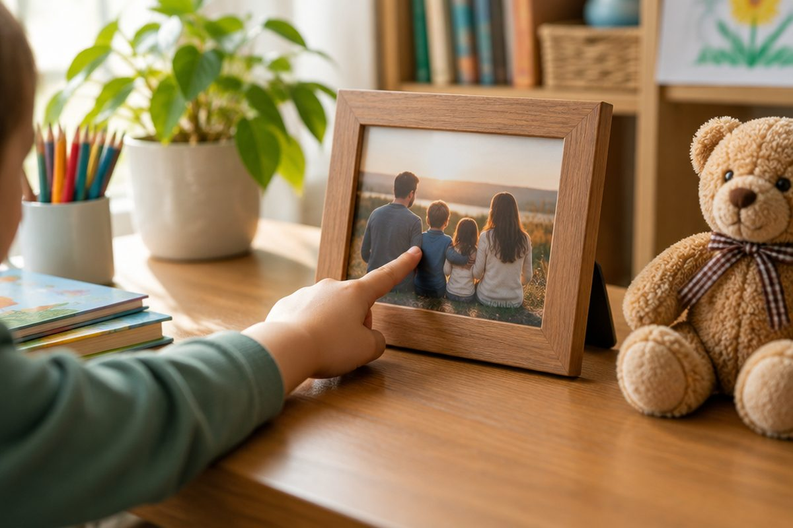

전체 단원 › 2학년 › 영어 › 3단계 · This is ~ 소개하기
This is my mom! 어떻게 소개할까?

친구에게 우리 엄마를 소개하고 싶어요. 영어로는 어떻게 말할까요?
This is ~는 "이 사람은 ~야"
가까이 있는 사람을 소개할 때 This is ~라고 해요.
This is 다음에 소개할 사람을 말해요.
This is my mom. (이분은 우리 엄마야.)
가족을 소개해요
my는 "나의"라는 뜻이에요.
my dad, my mom이에요.
my sister, my brother도 있어요.
This is my dad. This is my sister.
친구를 소개해요
친구는 friend예요.
이름을 넣어서 소개할 수도 있어요.
This is my friend, Mina. (얘는 내 친구 미나야.)
소개받으면 이렇게 말해요
Nice to meet you.는 "만나서 반가워."예요.
상대도 Nice to meet you, too.라고 대답해요.
Nice to meet you. Nice to meet you, too.
핵심 낱말
- This is ~
- 이 사람은(이것은) ~야, 하고 소개하는 말
- my
- 나의
- Nice to meet you.
- 만나서 반가워.
꼭 알아야 할 표현
| This is my mom. | 이분은 우리 엄마야. | 가족 소개 |
| This is my dad. | 이분은 우리 아빠야. | |
| This is my sister. | 얘는 내 언니(누나, 여동생)야. | sister는 여자 형제 |
| This is my brother. | 얘는 내 오빠(형, 남동생)야. | brother는 남자 형제 |
| This is my friend. | 얘는 내 친구야. | |
| This is my friend, Mina. | 얘는 내 친구 미나야. | 이름을 넣어 소개 |
| Nice to meet you. | 만나서 반가워. | 처음 만났을 때 |
| Nice to meet you, too. | 나도 만나서 반가워. | 대답할 때 |
| mom | 엄마 | [맘] |
| dad | 아빠 | [대드] |
한 줄 정리
- This is ~로 사람을 소개해요.
- my는 "나의": my mom, my dad, my friend.
- 소개받으면 Nice to meet you.라고 해요.
학교 교육과정 연결 (미리 배우기)
- [4영02-05] 자신, 주변 사람이나 사물의 소개나 묘사를 쉽고 간단한 문장으로 말하거나 보고 쓴다.